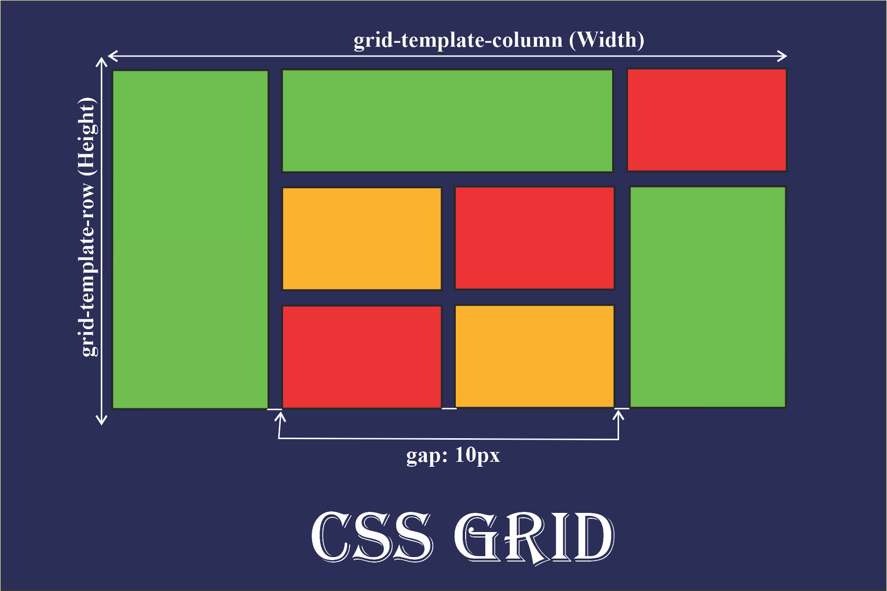

Grid
div(division)-block vs span-inline 디자인을 위한, 묶어주기 위한 무색무취의 아무 의미가 없는 태그 배치를 위해서 부모태그로 묶고 id를 주고 display:grid를 주고 grid-template를 이용, fr과 px를 이용해 조절
div(division)-block vs span-inline 디자인을 위한, 묶어주기 위한 무색무취의 아무 의미가 없는 태그 배치를 위해서 부모태그로 묶고 id를 주고 display:grid를 주고 grid-template를 이용, fr과 px를 이용해 조절